In uw buurt
Vigilante
Instellingen
Naar huis
Inloggen
Facebook
Notificaties posten op facebook
Tweet
Notificaties tweeten
X
Type van de notificatie:
Hindernis op de baan
Vuilnis
Probleem met het wegdek
Buurtevenement
Buurtactie
Uitleg over de notificatie
Verzenden maar!
Notificatie toevoegen
Dubbelklik op een locatie om te starten